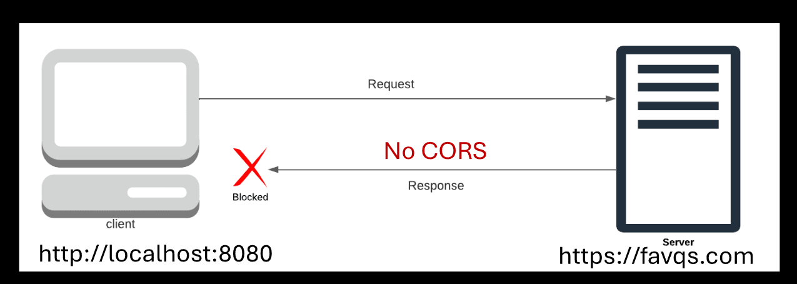

REST API
--------
REST: Representational State Transfer
API: Application Programming Interface
A set of rules for communicating with the server.
The URL to connect with the server must be properly formed.
1. Client: Makes a request according to the REST API rules (menu).
2. REST API: Sends the request in a way the server understands.
3. Server: Processes the request.
4. REST API: Delivers the response (stringified object).
REST API analogy
----------------
1. Customer: Requests a meal from the menu.
2. Waiter: Writes the request in a way the chef understands.
3. Chef: Processes the request by cooking the meal.
4. Waiter: Responds by delivering the meal.
Trivia API
----------------
Fetch function
--------------
const promise = fetch("https://opentdb.com/api.php?amount=1")
Sends a request to the URL of the REST API and returns a promise.
Its resolve value is not a stringified object.
The resolve value is a special object created by the fetch function.
There's an extra step to access the response from the REST API.
Text method
-----------
const promise = resolveValue.text(); //fetch object
Returns the stringified object from the fetch object and returns a promise.
Then method
-----------
promise.then(viewResponse);
The then method needs to be used after the promise is returned to get the server response.
Extracting the Trivia data
--------------------
function viewTriviaResponse(resolveValue) {
//THE RESOLVE VALUE WILL BE A STRINGIFIED OBJECT
//THE PARSE METHOD GENERATES AN OBJECT FROM THE STRING
const response = JSON. parse(resolveValue);
const results = response.results;
const item = results [0];
const question = item.question;
const answer = item. correct_answer;
const incorrects = item.incorrect_answers;
1. Create sample HTML of a trivia question and its answers.
2. Convert the HTML to a template string.
3. Replace the values with variables.
4. Output to an HTML element.
Specifying the Trivia data
--------------------
https://opentdb.com/api.php?amount=10
Specify amount to indicate how many questions to request.
https://opentdb.com/api.php?amount=10&category=CATEGORY_ID_HERE
Specify a category IDto get questions from a specific category.
https://opentdb.com/api.php?amount=10&difficulty=easy
Specify a difficultyto get questions from a specific difficulty: easy, medium, or hard.
https://opentdb.com/api.php?amount=10&type=multiple
Specify a typeto get questions from a specific type, multiple choice or true/false.
https://opentdb.com/api_category.php
Use this URL to look up the categories and their ideas.
POSTMAN
-------
Application for trying out and testing REST APIs.
The icon at the bottom left closes the History panel.
Key value pairs
----------------
They specify the data we want to request.
The key is on the left and the value on the right.
They are connected with = and separated by &.
A key value pair statement in a URL starts with a ?.
FavQs API
-----------
API for daily quotes
Endpoint
--------
A path that is appended to the end of the base URL.
An endpoint contains data about specific respirces.
API key
-------
A unique string or code that grants access to a REST API.
Some REST APIs require a key.
To use an API key from FavQs.com:
1. Go to the Auth tab.
2. Change the type to Bearer Token.
3. Paste the API key into the token box.
CORS
-------

Cross Origin Resource Sharing
Origin: The web addresses of the client and server.
Cross Origin: Different origins for client and server.
Resource: Data such as files and stringified objects.
Resource sharing: Transmitting resources.
The origin's policy for sharing resources.
Servers are supposed to tell browsers their CORS policy.
The CORS policy is a list of origins that are allowed to access the server.
Browsers block the response if the origin is not on the list.
Some servers do not specificy their CORS policy.
Browsers automatically block responses from different origins.
The quotes API doesn't specify a CORS policy.
Browsers automatically block responses from the quotes API.
Postman is not a browser, so it can receive the response.
The browser can receive the response because the URL matches.
The VS Code terminal is not a browser, so it receives the response.
The browser enforces CORS.
The browser can accept responses from an API that has CORS.
The trivia API has CORS for all origins.
CORS Proxy Server
--------------------
Allows the browser to receive responses from a server that does not specify CORS (cross origin resource sharing).
 A set of rules for communicating with the server.
The URL to connect with the server must be properly formed.
1. Client: Makes a request according to the REST API rules (menu).
2. REST API: Sends the request in a way the server understands.
3. Server: Processes the request.
4. REST API: Delivers the response (stringified object).
A set of rules for communicating with the server.
The URL to connect with the server must be properly formed.
1. Client: Makes a request according to the REST API rules (menu).
2. REST API: Sends the request in a way the server understands.
3. Server: Processes the request.
4. REST API: Delivers the response (stringified object).
 1. Customer: Requests a meal from the menu.
2. Waiter: Writes the request in a way the chef understands.
3. Chef: Processes the request by cooking the meal.
4. Waiter: Responds by delivering the meal.
1. Customer: Requests a meal from the menu.
2. Waiter: Writes the request in a way the chef understands.
3. Chef: Processes the request by cooking the meal.
4. Waiter: Responds by delivering the meal.


 Allows the browser to receive responses from a server that does not specify CORS (cross origin resource sharing).
Allows the browser to receive responses from a server that does not specify CORS (cross origin resource sharing).